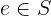
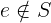
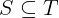
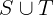
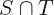
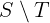
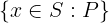
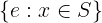

Sets
Sets are the foundational data structure in TLA+. (Similar to what lists are in Lisp and Python). The other TLA+ data structures can be all expressed with sets: functions, records, tuples, sequences. In theory, even Booleans and integers can be expressed with sets. In practice, TLA+ tools treat Booleans and integers as special values that are different from sets. It is important to understand TLA+ sets well. In contrast to programming languages, there is no performance penalty for using sets instead of sequences: TLA+ does not have a compiler, the efficiency is measured in the time it takes the human brain to understand the specification.
Immutability. In TLA+, a set is an immutable data structure that stores its elements in no particular order. All elements of a set are unique. In fact, those two sentences do not make a lot of sense in TLA+. We have written them to build the bridge from a programming language to TLA+, as TLA+ does not have a memory model. 😉
Sets may be constructed by enumerating values in some order, allowing for duplicates:
{ 1, 2, 3, 2, 4, 3 }
Note that the above set is equal to the sets { 1, 2, 3, 4 } and { 4, 3, 2, 1 }. They are actually the same set, though they are constructed by passing
various number of arguments in different orders.
The most basic set operation is the set membership that checks whether a set contains a value:
3 \in S
TLA+ sets are similar to
frozenset in
Python and immutable Set[Object] in Java. In contrast to programming
languages, set elements do not need hashes, as implementation efficiency is not
an issue in TLA+.
Types. In pure TLA+, sets may contain any kinds of elements. For instance, a set may mix integers, Booleans, and other sets:
{ 2020, { "is" }, TRUE, "fail" }
TLC restricts set elements to comparable values. See Section 14.7.2 of Specifying Systems. In a nutshell, if you do not mix the following five kinds of values in a single set, TLC would not complain about your sets:
- Booleans,
- integers,
- strings,
- sets,
- functions, tuples, records, sequences.
Apalache requires set elements to have the same type, that is, Set(a) for
some type a. This is enforced by the type checker. (Records are an exception
to this rule, as some records can be unified to a common type.)
Operators
Set constructor by enumeration
Notation: {e_1, ..., e_n}
LaTeX notation: {e_1, ..., e_n}
Arguments: Any number of arguments, n >= 0.
Apalache type: (a, ..., a) => Set(a), for some type a.
Effect: Produce the set that contains the values of the expressions e_1, ..., e_n, in no particular order, and only these values. If n = 0, the
empty set is constructed.
Determinism: Deterministic.
Errors: Pure TLA+ does not restrict the set elements. They can be any combination of TLA+ values: Booleans, integers, strings, sets, functions, etc.
TLC only allows a user to construct sets out of elements that are comparable. For instance, two integers are comparable, but an integer and a set are not comparable. See Section 14.7.2 of Specifying Systems.
Apalache goes further and requires that all set elements have the same type. If this is not the case, the type checker flags an error.
Example in TLA+:
{ 1, 2, 3 } \* a flat set of integers
{ { 1, 2 }, { 2, 3 } } \* a set of sets of integers
{ FALSE, 1 } \* a set of mixed elements.
\* Model checking error in TLC, type error in Apalache
Example in Python:
>>> {1, 2, 3}
{1, 2, 3}
>>> {frozenset({2, 3}), frozenset({1, 2})}
{frozenset({2, 3}), frozenset({1, 2})}
>>> {False, 1}
{False, 1}
Set membership
Notation: e \in S
LaTeX notation:

Arguments: Two arguments. If the second argument is not a set, the result is undefined.
Apalache type: (a, Set(a)) => Bool, for some type a.
Effect: This operator evaluates to:
TRUE, ifSis a set that contains an element that is equal to the value ofe; andFALSE, ifSis a set and all of its elements are not equal to the value ofe.
Warning: If you are using the special form x' \in S, this operator may
assign a value to x' as a side effect. See Control Flow and Non-determinism.
Determinism: Deterministic, unless you are using the special form x' \in S to assign a value to x', see Control Flow and Non-determinism.
Errors: Pure TLA+ does not restrict the operator arguments. TLC flags a
model checking error, when it discovers that e cannot be compared to the
elements of S. Apalache produces a static type error, if the type of e is
incompatible with the type of elements of S, or if S is not a set.
Example in TLA+:
1 \in { 1, 2, 3 } \* TRUE
10 \in { 1, 2, 3 } \* FALSE
{} \in { {1}, {2} } \* FALSE
1 \in { "a", "b" } \* model checking error in TLC,
\* static type error in Apalache
Example in Python: Python conveniently offers us in:
>>> 1 in {1, 2, 3}
True
>>> 10 in {1, 2, 3}
False
>>> 1 in {"a", "b"}
False
Set non-membership
Notation: e \notin S
LaTeX notation:

Arguments: Two arguments. If the second argument is not a set, the result is undefined.
Apalache type: (a, Set(a)) => Bool, for some type a.
Effect: This operator evaluates to:
FALSE, ifSis a set that contains an element that is equal to the value ofe; andTRUE, ifSis a set and all of its elements are not equal to the value ofe.
Warning: In contrast to x' \in S, the expression x' \notin T,
which is equivalent to ~(x' \in T) is never
treated as an assignment in Apalache and TLC.
Determinism: Deterministic.
Errors: Pure TLA+ does not restrict the operator arguments. TLC flags a
model checking error, when it discovers that e cannot be compared to the
elements of S. Apalache produces a static type error, if the type of e is
incompatible with the type of elements of S, or if S is not a set.
Example in TLA+:
1 \notin { 1, 2, 3 } \* FALSE
10 \notin { 1, 2, 3 } \* TRUE
{} \notin { {1}, {2} } \* TRUE
1 \notin { "a", "b" } \* model checking error in TLC,
\* static type error in Apalache
Example in Python: Python conveniently offers us not in:
>>> 1 not in {1, 2, 3}
False
>>> 10 not in {1, 2, 3}
True
>>> 1 not in {"a", "b"}
True
Equality and inequality
The operators a = b and a /= b are core operators of TLA+,
see Logic.
Set inclusion
Notation: S \subseteq T
LaTeX notation:

Arguments: Two arguments. If both arguments are not sets, the result is undefined.
Apalache type: (Set(a), Set(a)) => Bool, for some type a.
Effect: This operator evaluates to:
TRUE, ifSandTare sets, and every element ofSis a member ofT;FALSE, ifSandTare sets, and there is an element ofSthat is not a member ofT.
Determinism: Deterministic.
Errors: Pure TLA+ does not restrict the operator arguments. TLC flags a
model checking error, when it discovers that elements of S cannot be compared
to the elements of T. Apalache produces a static type error, if S and T
are either not sets, or sets of incompatible types.
Example in TLA+:
{ 1, 2 } \subseteq { 1, 2, 3 } \* TRUE
{ 1, 2, 3 } \subseteq { 1, 2, 3 } \* TRUE
{ 1, 2, 3 } \subseteq { 1, 2 } \* FALSE
{ {1} } \subseteq { 1, 2, 3 } \* FALSE, model checking error in TLC
\* static type error in Apalache
Example in Python: Python conveniently offers us <=:
>>> {1, 2} <= {1, 2, 3}
True
>>> {1, 2, 3} <= {1, 2, 3}
True
>>> {1, 2, 3} <= {1, 2}
False
>>> {frozenset({1})} <= {1, 2, 3}
False
Binary set union
Notation: S \union T or S \cup T
LaTeX notation:

Arguments: Two arguments. If both arguments are not sets, the result is undefined.
Apalache type: (Set(a), Set(a)) => Set(a), for some type a.
Effect: This operator evaluates to the set that contains the elements
of S as well as the elements of T, and no other values.
Determinism: Deterministic.
Errors: Pure TLA+ does not restrict the operator arguments. TLC flags a
model checking error, when it discovers that elements of S cannot be compared
to the elements of T. Apalache produces a static type error, if S and T
are either not sets, or sets of incompatible types.
Example in TLA+:
{ 0, 1, 2 } \union { 1, 2, 3 } \* { 0, 1, 2, 3 }
{ } \union { 1, 2, 3 } \* { 1, 2, 3 }
{ 1, 2, 3 } \union { } \* { 1, 2, 3 }
{ {1} } \union { 1, 2 } \* { {1}, 1, 2 }, model checking error in TLC
\* static type error in Apalache
Example in Python: Python conveniently offers us union
that can be written as |:
>>> {0, 1, 2} | {1, 2, 3}
{0, 1, 2, 3}
>>> set() | {1, 2, 3}
{1, 2, 3}
>>> {1, 2, 3} | set()
{1, 2, 3}
>>> {frozenset({1})} | {1, 2}
{1, frozenset({1}), 2}
Set intersection
Notation: S \intersect T or S \cap T
LaTeX notation:

Arguments: Two arguments. If both arguments are not sets, the result is undefined.
Apalache type: (Set(a), Set(a)) => Set(a), for some type a.
Effect: This operator evaluates to the set that contains only those elements
of S that also belong to T, and no other values.
Determinism: Deterministic.
Errors: Pure TLA+ does not restrict the operator arguments. TLC flags a
model checking error, when it discovers that elements of S cannot be compared
to the elements of T. Apalache produces a static type error, if S and T
are either not sets, or sets of incompatible types.
Example in TLA+:
{ 0, 1, 2 } \intersect { 1, 2, 3 } \* { 1, 2 }
{ } \intersect { 1, 2, 3 } \* { }
{ 1, 2, 3 } \intersect { } \* { }
{ {1} } \intersect { 1, 2 } \* { }, model checking error in TLC
\* static type error in Apalache
Example in Python: Python conveniently offers us intersection, which
can be also written as &:
>>> {0, 1, 2} & {1, 2, 3}
{1, 2}
>>> set() & {1, 2, 3}
set()
>>> {1, 2, 3} & set()
set()
>>> {frozenset({1})} & {1, 2}
set()
Set difference
Notation: S \ T
LaTeX notation:

Arguments: Two arguments. If both arguments are not sets, the result is undefined.
Apalache type: (Set(a), Set(a)) => Set(a), for some type a.
Effect: This operator evaluates to the set that contains only those elements
of S that do not belong to T, and no other values.
Determinism: Deterministic.
Errors: Pure TLA+ does not restrict the operator arguments. TLC flags a
model checking error, when it discovers that elements of S cannot be compared
to the elements of T. Apalache produces a static type error, if S and T
are either not sets, or sets of incompatible types.
Example in TLA+:
{ 0, 1, 2 } \ { 1, 2, 3 } \* { 0 }
{ } \ { 1, 2, 3 } \* { }
{ 1, 2, 3 } \ { } \* { 1, 2, 3 }
{ {1} } \ { 1, 2 } \* { {1} }, model checking error in TLC
\* static type error in Apalache
Example in Python: Python conveniently offers us difference, which
can be also written as -:
>>> {0, 1, 2} - {1, 2, 3}
{0}
>>> set() - {1, 2, 3}
set()
>>> {1, 2, 3} - set()
{1, 2, 3}
>>> {frozenset({1})} - {1, 2}
{frozenset({1})}
Set filter
Notation: { x \in S: P }
LaTeX notation:

Arguments: Three arguments: a variable name (or a tuple of names, see Advanced syntax), a set, and an expression.
Apalache type: The formal type of this operator is a bit complex. Hence, we give an informal description:
xhas the typea, for some typea,Shas the typeSet(a),Phas the typeBool,- the expression
{ x \in S: P }has the typeSet(a).
Effect: This operator constructs a new set F as follows. For every
element e of S, do the following (we give a sequence of steps to ease
the understanding):
- Bind the element
eto variablex, - Evaluate the predicate
P, - If
Pevaluates toTRUEunder the binding[x |-> e], then insert the element ofeinto setF.
Determinism: Deterministic.
Errors: Pure TLA+ does not restrict the operator arguments. TLC flags a
model checking error, if S is infinite. Apalache produces a static type
error, if the type of elements of S is not compatible with the type of x
as expected in P.
Advanced syntax: Instead of a single variable x, one can use a tuple
syntax to unpack variables from a Cartesian product, see Tuples.
For instance, one can write { <<x, y>> \in S: P }. In this case, for every
element e of S, the variable x is bound to e[1] and y is bound to
e[2]. The filter expression constructs the set of elements (tuples) that make
P evaluate to TRUE.
Example in TLA+:
{ x \in {1, 2, 3, 4}: x > 2 } \* { 3, 4 }
{ x \in {1, 2, 3, 4}: x > 10 } \* { }
\* check the section on tuples to understand the following syntax
{ <<x, y>> \in (1..4) \X (1..4): y = 3 } \* {<<1, 3>>, <<2, 3>>, <<3, 3>>, <<4, 3>>}
Example in Python: Python conveniently offers us the set comprehension syntax:
>>> S = {1, 2, 3, 4}
>>> { x for x in S if x > 2 }
{3, 4}
>>> { x for x in S if x > 10 }
set()
>>> S2 = {(x, y) for x in S for y in S}
>>> {(x, y) for (x, y) in S2 if y == 3}
{(2, 3), (3, 3), (1, 3), (4, 3)}
Set map
Notation: { e: x \in S } or { e: x \in S, y \in T }, or more arguments
LaTeX notation:

Arguments: At least three arguments: a mapping expression, a variable name (or a tuple of names, see Advanced syntax), a set. Additional arguments are variables’ names and sets, interleaved.
Apalache type: The formal type of this operator is a bit complex. Hence, we give an informal description for the one-argument case:
xhas the typea, for some typea,Shas the typeSet(a),ehas the typeb, for some typeb,- the expression
{ e: x \in S }has the typeSet(b).
Effect: We give the semantics for two arguments.
We write it as a sequence of steps to ease understanding.
This operator constructs a new set M as follows.
For every element e_1 of S and every element e_2 of T:
- Bind the element
e_1to variablex, - Bind the element
e_2to variabley, - Compute the value of
eunder the binding[x |-> e_1, y |-> e_2], - Insert the value
einto the setM.
Determinism: Deterministic.
Errors: Pure TLA+ does not restrict the operator arguments. TLC flags a
model checking error, if S is infinite. Apalache produces a static type
error, if the type of elements of S is not compatible in the context of e
when an element of S is bound to x.
Advanced syntax: Instead of a single variable x, one can use the tuple
syntax to unpack variables from a Cartesian product, see Tuples.
For instance, one can write { x + y: <<x, y>> \in S }. In this case, for every
element e of S, the variable x is bound to e[1] and y is bound to
e[2]. The map expression constructs the set of expressions that are computed
under this binding.
Example in TLA+:
{ 2 * x: x \in { 1, 2, 3, 4 } } \* { 2, 4, 6, 8 }
{ x + y: x \in 1..2, y \in 1..2 } \* { 2, 3, 4 }
\* check the section on tuples to understand the following syntax
{ x + y: <<x, y>> \in (1..2) \X (1..2) } \* { 2, 3, 4 }
Example in Python: Python conveniently offers us the set comprehension syntax:
>>> S = frozenset({1, 2, 3, 4})
>>> {2 * x for x in S}
{8, 2, 4, 6}
>>> T = {1, 2}
>>> {x + y for x in T for y in T}
{2, 3, 4}
>>> T2 = {(x, y) for x in T for y in T}
>>> T2
{(1, 1), (1, 2), (2, 1), (2, 2)}
>>> {x + y for (x, y) in T2}
{2, 3, 4}
Powerset
Notation: SUBSET S
LaTeX notation: SUBSET S
Arguments: One argument. If it is not a set, the result is undefined.
Apalache type: Set(a) => Set(Set(a)), for some type a.
Effect: This operator computes the set of all subsets of S.
That is, the set T the has the following properties:
- If
X \in T, thenX \subseteq S. - If
X \subseteq S, thenX \in T.
Determinism: Deterministic.
Errors: Pure TLA+ does not restrict the operator argument. TLC flags a
model checking error, when it discovers that S is not a set. Apalache
produces a static type error, if the type of S is not a set type.
Example in TLA+:
SUBSET { 0, 1, 2 }
\* { {}, {0}, {1}, {2}, {0, 1}, {1, 2}, {0, 2}, {0, 1, 2} }
Example in Python: An implementation of SUBSET S in Python is not trivial.
To appreciate the power of TLA+, see subset.py.
Set flattening
Notation: UNION S
LaTeX notation: UNION S
Warning: Do not confuse UNION S with S \union T. These are two
different operators, which unfortunately have similar-looking names.
Arguments: One argument. If it is not a set of sets, the result is undefined.
Apalache type: Set(Set(a)) => Set(a), for some type a.
Effect: Given that S is a set of sets, this operator computes the set
T that contains all elements of elements of S:
- If
X \in S, thenX \subseteq T. - If
y \in T, then there is a setY \in Sthat containsy, that is,y \in Y.
In particular, UNION flattens the powerset that is produced by SUBSET. That
is, (UNION (SUBSET S)) = S.
Determinism: Deterministic.
Errors: Pure TLA+ does not restrict the operator argument. TLC flags a
model checking error, when it discovers that S is not a set of sets.
Apalache produces a static type error, if the type of S is different from a
set of sets.
Example in TLA+:
UNION { {0, 1}, {1, 2}, {3} }
\* { 0, 1, 2, 3 }
Example in Python: In contrast to SUBSET S, an implementation of UNION S
in Python is quite simple:
>>> from functools import reduce
>>> s = { frozenset({0, 1}), frozenset({1, 2}), frozenset({3}) }
>>> reduce((lambda x, y: x | y), s, set())
{0, 1, 2, 3}
Set cardinality
Notation: Cardinality(S)
LaTeX notation: Cardinality(S)
Warning: Cardinality(S) is defined in the module FiniteSets.
Arguments: One argument. If S is not a set, or S is an infinite set,
the result is undefined.
Apalache type: Set(a) => Int, for some type a.
Effect: Cardinality(S) evaluates to the number of (unique) elements in
S.
Determinism: Deterministic.
Errors: Pure TLA+ does not restrict the operator argument. TLC flags a
model checking error, when it discovers that S is not a set, or when it is an
infinite set. Apalache produces a static type error, if the type of S is
different from a finite set.
Example in TLA+:
EXTENDS FiniteSets
...
Cardinality({ 1, 2, 3 })
\* 3
Example in Python: In Python, we just use the set size:
>>> S = { 1, 2, 3 }
>>> len(S)
3
Set finiteness
Notation: IsFinite(S)
LaTeX notation: IsFinite(S)
Warning: IsFinite(S) is defined in the module FiniteSets.
Arguments: One argument. If S is not a set, the result is undefined.
Apalache type: Set(a) => Bool, for some type a.
Effect: IsFinite(S) evaluates to:
TRUE, whenSis a finite set,FALSE, whenSis an infinite set.
Determinism: Deterministic.
Errors: Pure TLA+ does not restrict the operator argument. TLC flags a
model checking error, when it discovers that S is not a set. Apalache
produces a static type error, if the type of S is different from a set.
Example in TLA+:
EXTENDS FiniteSets
...
IsFiniteSet({ 1, 2, 3 }) \* TRUE
IsFiniteSet(BOOLEAN) \* TRUE
IsFiniteSet(Nat) \* FALSE
IsFiniteSet(Int) \* FALSE
IsFiniteSet(STRING) \* FALSE
Example in Python: We can construct only finite sets in Python.